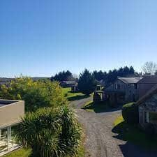

Cabañas
Un lugar familiar, donde podes venir a disfrutar de la serrania de Tandil, con un bello parque. Las cabañas fueron creadas para que sea un entorno donde puedas sentirte como en casa, en armonia.
Nosotros
La familia Montero Avila los espera en el complejo de Cabañas "Jardín Serrano" lugar de singular belleza, con una vista panorámica a una de las sierras mas antiguas del planeta. En el cual usted podrá pasar unas lindas vacaciones junto a su familia y amigos, disfrutará de un bello paisaje y una de las mejores ubicaciones turísticas de la ciudad.